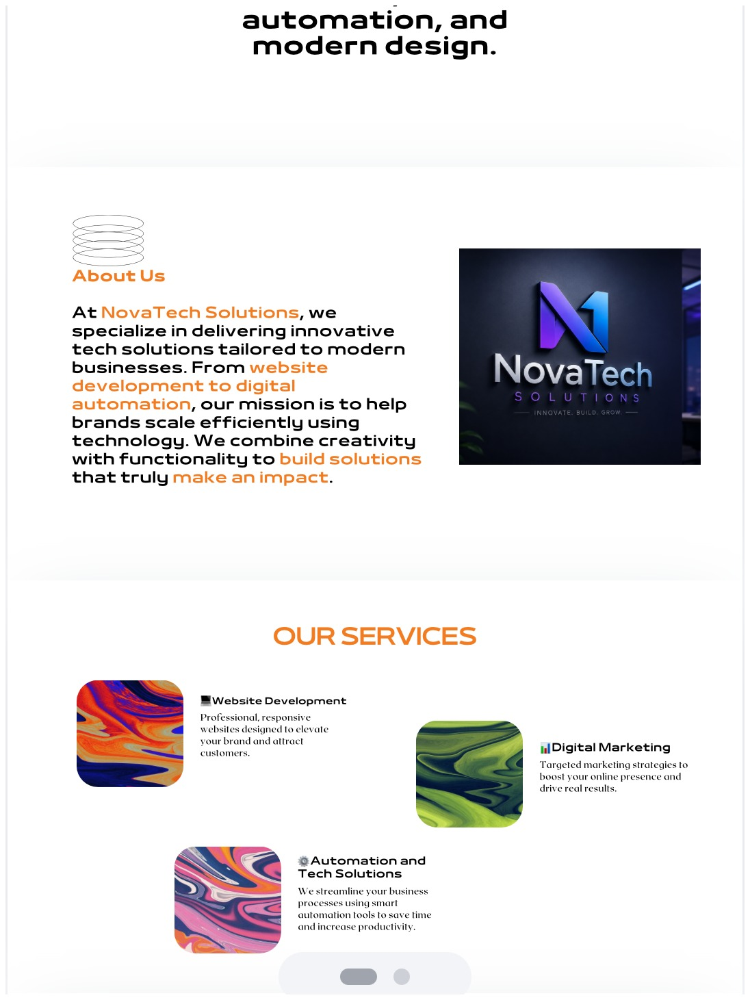
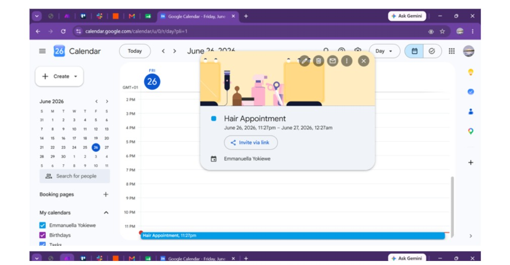
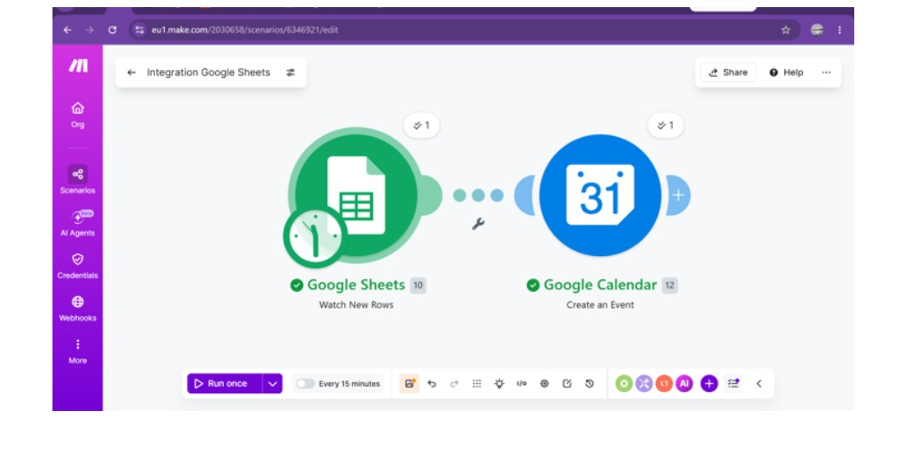
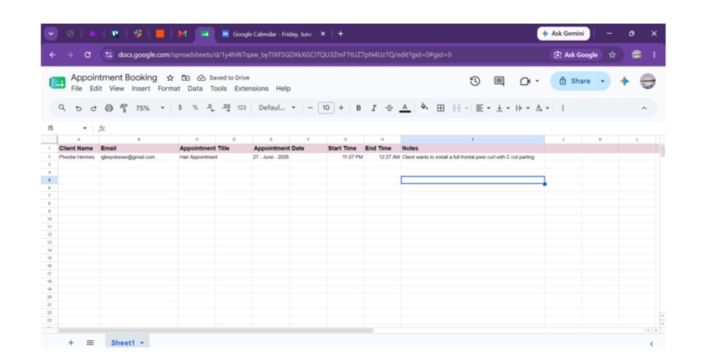
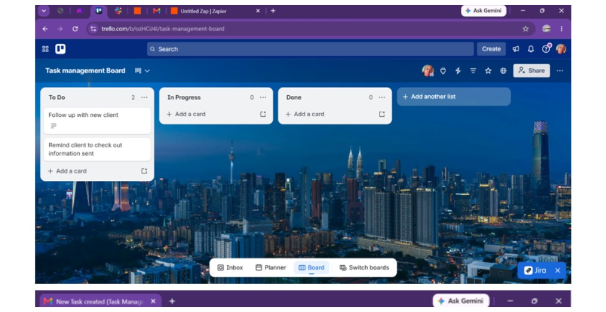
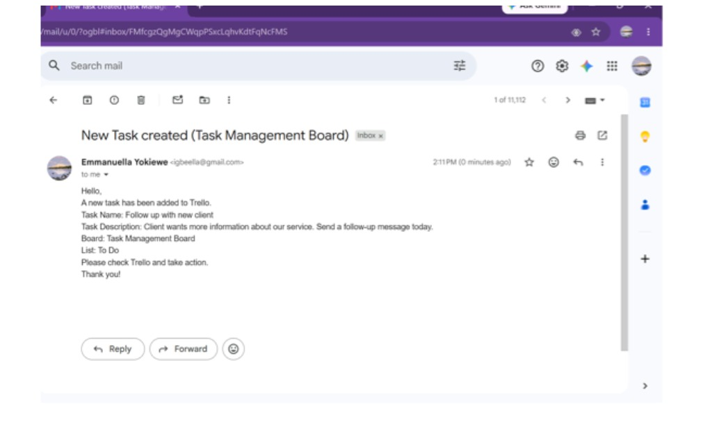
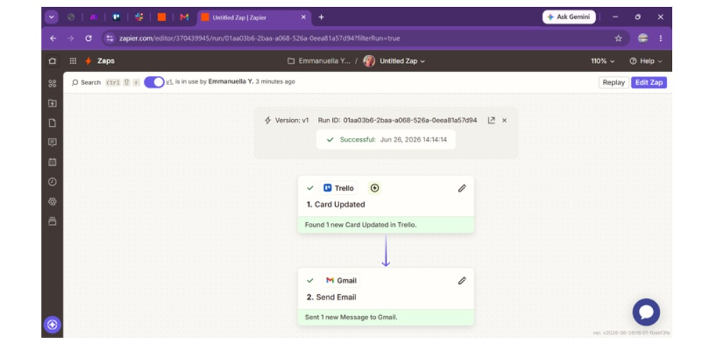

I’m Emmanuella Yokiewe Igbe, an Administrative and HR professional supporting recruitment, employee records, executive activities, customer relations, data management, and remote operations.
Explore My WorkI help businesses stay organized through accurate information management, clear communication, structured workflows, and dependable administrative support.
My experience spans office administration, HR operations, recruitment support, executive assistance, customer relationship management, data entry, reporting, scheduling, and follow-up. I’m comfortable working independently in remote environments while keeping communication clear and tasks properly tracked.
Records, documents, correspondence, office coordination, scheduling, inquiries, and daily administration.
Candidate screening, applicant communication, recruitment coordination, onboarding, and employee records.
Remote task coordination, information management, communication, and operational support.
Accurate data entry, database updates, information gathering, record maintenance, and documentation.
Appointment scheduling, meeting coordination, correspondence, reminders, and follow-up.
Executive scheduling, client communication, customer follow-ups, and administrative coordination.
Demonstration projects showing organization, tracking, communication, and information-management skills.
Structured candidate tracking from application and screening through interviews, follow-ups, and onboarding.
Skills: Recruitment • Data Entry • Follow-upEmployee-information workflow focused on accurate records, document status, updates, and confidentiality.
Skills: HR Administration • Records • Accuracy90-day planning workflow covering meetings, agendas, deadlines, action items, and follow-ups.
Skills: Calendar Management • CoordinationSystem for categorizing HR requests, prioritizing messages, tracking response deadlines, and documenting resolution.
Skills: Email Management • PrioritizationWorkflow for collecting, validating, organizing, and presenting operational information.
Skills: Excel • Reporting • Data ManagementRecruitment-support workflow based on outreach, information gathering, applicant follow-up, and record updates.
Skills: Outbound Calling • Recruitment • CRM
Website and service-page concept demonstrating visual organization, layout, branding, and presentation skills.

Calendar setup demonstrating appointment scheduling, time management, and organized daily planning.

Make.com workflow connecting Google Sheets with Google Calendar to automate event creation.

Structured appointment-tracking sheet showing organized client, date, time, and notes information.

Task board demonstrating workflow organization, task status tracking, and follow-up management.

Automated email notification showing how task updates can be communicated clearly through Gmail.

Automation workflow demonstrating a Trello card update triggering an email notification.
Visual samples are portfolio demonstrations. Confidential employer information has not been included. View the full work-samples PDF · Open the Excel samples
Client relationships, customer records, sales reports, follow-ups, and business-growth support.
Executive schedules, appointments, correspondence, administrative coordination, documentation, and client communication.
University of Uyo · 2018–2024
Digital Wakaa
TechCrush
Soft Skills Certification — Alison
NYSC completed June 2025 – May 2026
Looking for dependable administrative, HR, recruitment, data-entry, or virtual support? I’d love to connect.
Email Me+234 903 536 9371 • LinkedIn igbeella@gmail.com